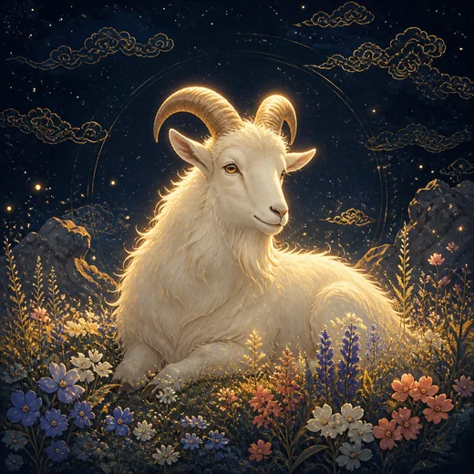

이 게시물은 쿠팡 파트너스 활동의 일환으로, 이에 따른 일정액의 수수료를 제공받습니다.


양띠 — 오늘의 운세·나이·성격·궁합
양띠 한눈에 보기
양띠 나이·년생표 (2026년 기준)
| 년생 | 간지 | 2026년 나이 | 년생별 |
|---|---|---|---|
| 2015년생 | 을미년(乙未) · 푸른 양 | 만 11세 | |
| 2003년생 | 계미년(癸未) · 검은 양 | 만 23세 | 2027년 운세 |
| 1991년생 | 신미년(辛未) · 흰 양 | 만 35세 | 2027년 운세 |
| 1979년생 | 기미년(己未) · 노란 양 | 만 47세 | 2027년 운세 |
| 1967년생 | 정미년(丁未) · 붉은 양 | 만 59세 | 2027년 운세 |
| 1955년생 | 을미년(乙未) · 푸른 양 | 만 71세 | 2027년 운세 |
| 1943년생 | 계미년(癸未) · 검은 양 | 만 83세 |
나이는 생일이 지난 뒤의 만 나이입니다. 생일 전이면 한 살을 빼세요. 1월~2월 초(입춘 전)에 태어났다면 앞 해의 띠입니다. 다른 띠까지 한 표로 보려면 띠 순서·띠 계산기를 보세요.

양띠는 십이지의 여덟 번째 자리인 미(未)입니다. 설화에서 양은 원숭이·닭과 함께 뗏목을 만들어 강을 건넜다고 전합니다. 혼자 앞서기보다 함께 방법을 찾아 건넌 쪽이라는 점이 이 띠의 성격을 잘 보여줍니다.
미(未)의 오행은 토(土)이고 계절로는 여름의 끝, 시간으로는 오후 1~3시입니다. 미토는 여름의 열기를 머금어 바싹 마른 땅이고, 명리에서는 목(木)의 창고로도 봅니다. 안에 자란 것을 거두어 저장하는 자리라, 양띠는 밖으로 뻗기보다 안에서 정리하고 품는 힘이 강합니다.
강점은 배려와 예술 감각입니다. 상대의 감정을 세밀하게 읽고 맞춰주며, 분위기를 부드럽게 만드는 힘이 있습니다. 색·소리·글의 결을 잡는 감각이 좋아 창작 분야에서 재능이 드러나는 경우가 많습니다. 큰 소리를 내지 않으면서도 사람을 모으는 편이라, 오래 유지되는 관계가 많습니다.
챙길 점은 결정과 자기 표현입니다. 상대의 입장을 먼저 보다 보니 정작 자기가 원하는 것을 말하지 못합니다. 걱정이 많아 결정을 미루고, 미룬 사이 상황이 대신 결정해버립니다. 서운함을 안으로 쌓는 방식도 관계를 어렵게 만듭니다. 원하는 것을 초반에 말하는 연습이 이 띠에게 가장 큰 성장입니다.
양띠의 연애
정성을 다하는 쪽입니다. 상대의 취향과 일정을 기억하고 세심하게 챙깁니다. 다투는 것을 싫어해 웬만한 일은 넘어가주고, 함께 있으면 편안하다는 말을 자주 듣습니다.
다만 참는 방식이 문제가 됩니다. 괜찮다고 넘긴 일이 쌓이면 어느 순간 마음이 먼저 닫히고, 상대는 이유를 모른 채 거리를 느낍니다.
오래가는 관계의 조건은 요구입니다. 알아주기를 기다리는 대신 원하는 것을 말하는 것, 서운할 때 작게 말하는 것. 이 두 가지만으로 양띠의 애정은 훨씬 안정적으로 흐릅니다.
양띠의 일과 적성
감성과 사람을 함께 다루는 일에서 강합니다. 디자인, 공예, 음악, 상담, 교육, 복지, 서비스처럼 결이 성과가 되는 분야가 잘 맞습니다. 미토의 품는 성질은 팀의 온도를 유지하는 역할로 나타납니다.
경쟁이 노골적인 환경보다 서로를 존중하는 환경에서 능력이 온전히 나옵니다. 혼자 오래 다듬는 작업에도 강합니다.
주의할 지점은 자기 몫 챙기기입니다. 남의 부탁을 다 받다가 본래 일이 밀리고, 기여가 기록에 남지 않아 저평가되기 쉽습니다. 맡은 범위를 분명히 하고 한 일을 남기는 습관이 필요합니다.
양띠 궁합 — 삼합·육합·충
삼합 — 돼지띠, 토끼띠
해묘미(亥卯未) 삼합입니다. 돼지·토끼·양이 모여 목(木) 기운을 완성하는 조합이라 정서의 결이 부드럽게 맞습니다. 돼지띠와는 서로 편하게 기대는 관계가 되고, 토끼띠와는 감각과 취향이 비슷해 함께 있는 시간이 즐겁습니다.
육합 — 말띠
오미(午未) 육합입니다. 양띠의 세심함과 말띠의 추진력이 서로를 채웁니다. 결정을 미루는 양띠를 말띠가 밀어주고, 달리다 놓치는 것을 양띠가 챙기는 구조입니다.
충 — 소띠
축미(丑未)충입니다. 같은 토끼리 부딪히는 자리라 방향이 다를 때 서로 물러서지 않습니다. 양띠는 소띠의 완고함을 답답해하고, 소띠는 양띠의 우유부단함을 답답해합니다. 영역을 먼저 나누면 둘 다 성실한 편이라 오히려 안정적인 조합이 됩니다.
양띠와 열두 띠 모두의 궁합은 양띠 궁합에서 한눈에 볼 수 있습니다.
양띠의 2027 정미년
2027년은 정미(丁未)년으로, 태세의 지지 미(未)가 양띠의 미(未)와 같은 본명년입니다. 자기 띠의 해는 예로부터 변화가 크다고 보아 신경 쓰는 해입니다. 명리에서는 태세와 같은 글자가 겹쳐 한 해 전체에 자기 기운이 강하게 실리는 해로 읽습니다. 좋고 나쁨보다 무게가 실린다는 뜻에 가깝습니다.
요령은 일을 새로 벌이기보다 정리하는 것입니다. 관계와 일, 지출에서 오래 끌어 온 것을 하나씩 매듭짓는 해로 쓰면 무리가 적습니다. 큰 이사나 창업처럼 되돌리기 어려운 결정은 서두르지 마십시오.
정(丁)의 화(火)와 미토(未)가 함께 있어 화토 기운이 짙은 해입니다. 양띠는 토의 성질이라 기운이 두터워지니, 고집이 굳지 않게 다른 사람의 의견을 한 번 더 듣는 습관이 도움이 됩니다.
12띠를 한 장에서 견주려면 2027 정미년 한눈에 표를 보세요.
양띠 년생별 2027년 운세 — 1955년생 · 1967년생 · 1979년생 · 1991년생 · 2003년생 · 삼재 계산기 · 띠 순서·나이표
양띠의 2026 병오년
2026년 병오(丙午)년의 지지 오(午)는 양띠의 미(未)와 육합을 이룹니다. 오미합은 십이지 여섯 육합 중 하나로, 마찰 없이 맞물리는 관계입니다. 명리에서는 사람과 일이 부드럽게 풀리는 흐름으로 봅니다.
2026년 양띠에게는 관계에서 오는 기회가 많습니다. 소개, 협업, 추천처럼 사람을 통해 들어오는 제안이 늘어나기 쉬우니, 평소 미뤄둔 연락을 먼저 해보는 편이 좋습니다.
주의할 것은 거절입니다. 흐름이 좋은 해에는 부탁도 함께 늘어납니다. 받을 것과 넘길 것을 초반에 구분해두지 않으면, 좋은 해가 바쁘기만 한 해로 끝날 수 있습니다.
이 내용을 더 배우려면
양띠는 사주 여덟 글자 가운데 태어난 해의 아래 글자(연지) 미(未)입니다. 지지 열두 글자는 3강, 띠끼리 붙고 부딪히는 합·충은 11강, 사주의 해가 입춘에 바뀌어 띠가 달라지는 이유는 4강에서 배웁니다.
자주 묻는 질문
양띠는 몇 년생인가요?
1955년생(2026년 만 71세), 1967년생(2026년 만 59세), 1979년생(2026년 만 47세), 1991년생(2026년 만 35세), 2003년생(2026년 만 23세), 2015년생(2026년 만 11세)이 양띠입니다. 1월이나 2월 초(입춘 전)에 태어났다면 앞 해의 띠일 수 있습니다.
양띠와 잘 맞는 띠는?
삼합인 돼지띠와 토끼띠, 육합인 말띠가 대표적입니다. 해묘미(亥卯未) 삼합입니다. 돼지·토끼·양이 모여 목(木) 기운을 완성하는 조합이라 정서의 결이 부드럽게 맞습니다. 돼지띠와는 서로 편하게 기대는 관계가 되고, 토끼띠와는 감각과 취향이 비슷해 함께 있는 시간이 즐겁습니다.
양띠가 조심할 띠는?
충 관계인 소띠입니다. 축미(丑未)충입니다. 같은 토끼리 부딪히는 자리라 방향이 다를 때 서로 물러서지 않습니다. 양띠는 소띠의 완고함을 답답해하고, 소띠는 양띠의 우유부단함을 답답해합니다. 영역을 먼저 나누면 둘 다 성실한 편이라 오히려 안정적인 조합이 됩니다.
양띠에게 2027년은 어떤 해인가요?
2027년은 정미(丁未)년으로, 태세의 지지 미(未)가 양띠의 미(未)와 같은 본명년입니다. 자기 띠의 해는 예로부터 변화가 크다고 보아 신경 쓰는 해입니다. 명리에서는 태세와 같은 글자가 겹쳐 한 해 전체에 자기 기운이 강하게 실리는 해로 읽습니다. 좋고 나쁨보다 무게가 실린다는 뜻에 가깝습니다.
띠는 언제 바뀌나요?
사주에서 띠는 양력 1월 1일이 아니라 입춘(2월 4일경)에 바뀝니다. 1월이나 2월 초에 태어났다면 앞 해의 띠일 수 있으니 사주팔자 만세력에서 확인하세요.